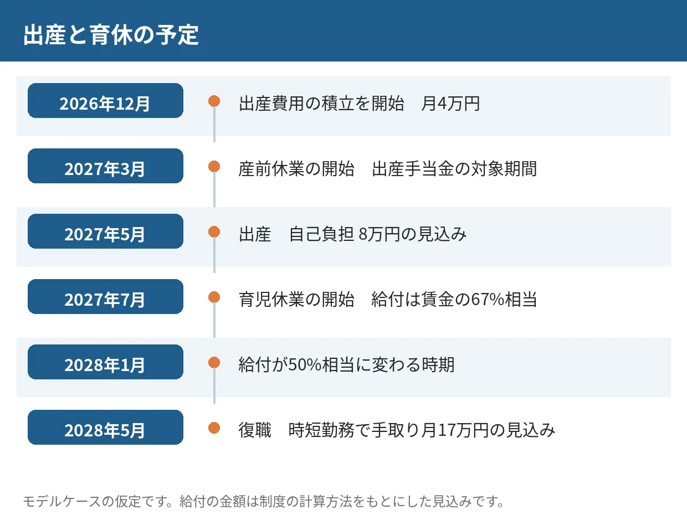

出産と育休に備えるお金 支払いと給付の入金を分けた家計計画
出産費用の自己負担は8万円の見込み。出産手当金と育児休業給付金は入金が後になるため、生活費2か月分ほどの手元資金で給付を待つ家計計画を、予定表と収支のリストで整理します。
この記事の要点
- 出産費用の自己負担は8万円の見込みで、準備用品と合わせた20万円は、出産前の5か月の積立で用意できます
- 休業の初めの期間は給付の入金が後になるため、生活費2か月分ほどの手元資金を普通預金に残しておくことが要です
- 次の一歩は、出産予定の施設で費用の案内と直接支払制度の利用の可否を確認すること。そして12月から、出産費用用の積立を始めることです
制度・金額の確認日 2026年11月20日
ご相談の形で書いたモデルケースです。ご家庭と家計の数字は仮定で、出産育児一時金と育児休業給付金の制度の内容は2026年11月20日に確認しています
今回のご相談
「来年の5月に出産を予定しています。出産の費用はどのくらい自己負担になるのか、育児休業の間の収入がどう変わるのかが分からず、家計が回るのか不安です」
出産の前後は、支払いの時期と給付の入金の時期がずれます。このご家庭の場合、収入の総額よりも、入金までの間をつなぐ手元資金と、出産費用の自己負担を先に用意できるかどうかが課題でした。
ご相談のご家庭
- 夫の健一さん（33歳）。物流会社の営業職で、手取りは月28万円、賞与は年に70万円ほどです。趣味は月2回の釣りで、1回に8千円ほど使います
- 妻の沙織さん（31歳）。一般企業の総務で正社員として勤務し、給与は月27万円、手取りは月21万円です。来年3月から産前休業に入り、出産後は育児休業を取る予定です
- 住まいは神奈川県内の賃貸で、家賃は月12万円です。車は軽自動車を1台持っています
- お子さまは来年5月に誕生する予定で、復職はお子さまが1歳になる来々年5月を考えています。復職後は時短勤務の予定です
このご家庭の心配ごと
- 出産費用の自己負担。出産育児一時金でまかなえる範囲と、超える分がいくらかを知りたいそうです
- 給付の入金までの手元資金。出産手当金と育児休業給付金は、申請の後にまとめて支給されるため、休業の初めの時期は収入が細ります
- 復職後の家計。時短勤務になると手取りが減るため、保育料を払った後の収支が心配だそうです
現在の収支（ご相談に関係する範囲）
収入（月）
- 健一さんの手取り28万円
- 沙織さんの手取り21万円
- 合計49万円
支出（月）
- 家賃12万円
- 食費7万円
- 水道光熱・通信3万円
- 車の維持費2万円
- 保険料1万5千円
- 日用品や趣味など6万円
- 合計31万5千円
残りと資産
- 月の残り17万5千円（うち貯蓄と投資に10万円、臨時支出とゆとりに7万5千円）
- 預貯金420万円
- 投資信託80万円
これから必要になるお金と時期
- 2026年12月 出産費用の積立を開始 月4万円
- 2027年3月 産前休業の開始。出産手当金の対象期間に入ります
- 2027年5月 出産。施設の費用58万円のうち、出産育児一時金50万円を差し引いた8万円が自己負担の見込みです
- 2027年7月 育児休業の開始。育児休業給付金は、開始から180日目までが賃金の67パーセント相当です
- 2028年1月 育児休業給付金が50パーセント相当に変わる時期です
- 2028年4月 保育園への入園
- 2028年5月 復職。時短勤務で、手取りは月17万円ほどの見込みです

制度の金額は、次のとおりです。出産育児一時金は、お子さま1人につき原則50万円が、加入している公的医療保険から支給されます。直接支払制度を使う場合は、一時金が施設へ直接支払われるため、窓口での支払いは費用の総額から50万円を差し引いた分になります。
出産手当金は、産前42日と産後56日の休業期間について、1日につき標準報酬日額の3分の2が支給される制度です。沙織さんの場合は、標準報酬日額が9千円のため、1日6千円、98日分で58万8千円が支給の見込みです。ただし、支給は産休が終わってからの申請になるため、入金は休業期間の後になります。
育児休業給付金は、休業を始める前の賃金をもとに計算されます。沙織さんの賃金日額は9千円で、30日分の給付は、開始から180日目までが18万900円、181日目以降は13万5千円です。給付は2か月ごとに申請と支給が行われるのが一般的で、初回の入金は休業の開始から2か月ほど後になります。
ご提案1 出産費用の自己負担と準備用品は、出産前に積み立てる
出産費用の自己負担は8万円の見込みです。これに、ベビー用品や寝具などの準備用品12万円を合わせると、出産までに用意したい金額は20万円になります。
今の貯蓄月10万円のうち4万円を出産費用用に振り分け、2026年12月から2027年4月までの5か月続けると、20万円に届きます。期限が決まっている出費ですので、投資信託の積立よりも、普通預金での積立が向いています。
ご提案2 給付の入金までの期間は、手元資金でつなぐ
休業中の世帯収入は、健一さんの手取り28万円が中心になります。出産手当金と育児休業給付金は、どちらも申請の後に入金されるため、2027年3月から7月ごろまでは、入ってくるお金が細る期間です。
この期間の支出は、月31万5千円に、お子さまの費用2万円を足して、月33万5千円ほどになります。収入28万円との差は月5万5千円ほどで、4か月分では22万円ほどです。預貯金420万円のうち、生活費2か月分にあたる67万円ほどを、すぐに使える普通預金に残しておくと、給付の入金を待つ間も家計が滞りません。
育児休業給付金が入るようになると、67パーセントの期間は世帯収入が月46万900円ほどになり、支出33万5千円との差は月12万6千円ほどです。50パーセントに変わる2028年1月以降は、世帯収入が月41万5千円、差は月8万円ほどになります。給付の割合が下がる時期を先に知っておくと、その時期に大きな支出を重ねない計画が立てられます。
ご提案3 復職後の家計は、保育料と時短勤務で組み直す
復職後の沙織さんの手取りは、時短勤務で月17万円ほどの見込みです。世帯の手取りは45万円ほどになります。ここから保育料が差し引かれる形ではなく、保育料は支出として加わります。保育料の金額は、お住まいの自治体と世帯の所得によって決まりますので、入園の申込みの時期に、自治体の保育料の表で確認することが大切です。
あわせて、出産は保障を見直す時期でもあります。今の保険料は月1万5千円で、健一さんの死亡保障は勤務先の団体保険が中心です。お子さまが小さい期間は、万一のときの生活費の不足が大きくなります。不足の金額と必要な期間を先に整理したうえで、具体的な商品の比較は、保険の無料相談などで詰めていく形が現実的です。
このご家庭への結論
- 出産費用の自己負担は8万円の見込みで、準備用品と合わせた20万円は、出産前の5か月の積立で用意できます
- 休業の初めの期間は給付の入金が後になるため、生活費2か月分ほどの手元資金を普通預金に残しておくことが要です
- 次の一歩は、出産予定の施設で費用の案内と直接支払制度の利用の可否を確認すること。そして12月から、出産費用用の積立を始めることです
この記事のご家庭と家計はモデルケースの仮定です。出産育児一時金の支給額は原則50万円で、施設の費用はご家庭が選んだ施設の場合の金額です。出産手当金と育児休業給付金の金額は、制度の計算方法をもとにした見込みで、実際の支給額は加入している保険者とハローワークの審査で決まります。制度の内容は2026年11月20日に確認しています。